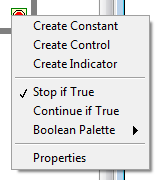
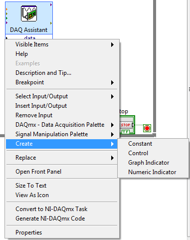
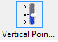
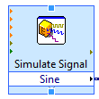

Experiment 4.1
Labview as a Source of Signals
Last week we looked at the ability of Labview to measure and display external signals. These included voltages and other physical variables which we could represent as voltages. This week we will start by looking at the other direction: using Labview to generate signals. These will also be voltages, which we can then use in their own right or transform into other physical variables.
In this Experiment we will practice signal generation techniques on a new, blank VI. When we are confident of our skills, we will use them to make improvements to the VI we built last week in Experiment 3.2.
Part A: Generate a Fixed Voltage
Let's start with something simple: a VI that puts out a constant 1 volt signal. Not very exciting, but we can add enhancements until it does something useful.
Recall that the DAQ card has two analog voltage outputs: dac0 and dac1.
Unlike the analog inputs which have different sensitivities, there's no real
difference between these, so we'll arbitrarily choose dac0 for our output.
-
Use a BNC patch cable to connect
J1-1toCH 1of the oscilloscope. On the breadboard, connectJ1-1(pin 1) todac0(pin 51). -
Start Labview and open a new, blank VI. Since we want this VI to run continuously, go to the block diagram window and create a large while loop. There is a shortcut to creating an input or output block to any placed block. We can use this shortcut to create a Stop button for the while loop. Hover over the input pin of the loop condition (red dot) and the arrow cursor will turn into a spool of wire cursor. Right-click on the input pin and dialog box appears:
 -
There are three types of entries possible - a constant, a control (which is a user-controlled variable) or an indicator (i.e., a numeric or graphical display). Click on Create Control, and a stop button appears.
-
We create D/A output blocks in nearly the same way we did A/D input blocks, using the DAQ Assistant. Go to SignalExpress \(\rightarrow\) DAQ Assistant, then place the resulting block inside the while loop, somewhere in the right-hand half.
-
Select Generate Signals \(\rightarrow\) Analog Output \(\rightarrow\) Voltage. From the list of Supported Physical Channels, select
ao0, then click theFinishbutton at the bottom of the frame. -
Set the
Output Rangeto have aMaxof 10 Volts and aMinof -10 Volts. Set theGeneration Modeto1 Sample (On Demand). When finished, click theOKbutton. The block will expand, and a white band containing the worddatawill appear. -
On the left-hand side of the while loop, place a numeric constant and set the value set to 1.
-
Wire the constant to the
datainput of the D/A output block. Our first signal generating VI is finished. -
Press
Runand verify on the oscilloscope that the output is set to 1 volt.
Part B: Input from the Front Panel
As we'll see shortly, being able to output/ produce a fixed voltage is a useful capability. But being able to change the value of that voltage would make it even more useful. We could do this by editing the value of the numeric constant, but we would have to stop the VI each time we wanted to make a change. It would be much easier if we could do this from the front panel. Fortunately, we are able to do this by using a numeric control, which is the dual of a numeric indicator, i.e. instead of displaying a value it allows you to enter one.
-
Go to the front panel and press the
Stopbutton. (VIs can't be edited while they are running). -
Delete the numeric constant input. Right-click on the input pin to data and select Create.
 -
Select Control. Change the label to
Vout. -
Find the newly created numeric control on the Front Panel. A shortcut for this is to right-click on it in the block diagram and select Find Control. This will bring up the block diagram with the associated icon selected.
-
Press the
Runbutton. If the numeric control still contains the default value (zero), the signal displayed on the scope should fall to zero. -
With the VI still running, double click over the
Voutcontrol and type in a new value (between -10 and 10). PressEnteror click the check box. The signal on the scope should jump to the value that you entered. -
Try typing in a few more values. When the excitement has faded, stop the VI.
-
Typing in a number is a convenient way to precisely set a value, but for quick changes, something like a knob is more suitable. On the Front Panel, right-click over the
Voutcontrol and selectReplace. This will bring up a palette of objects with which this control may be replaced. From this palette, select Numeric \(\rightarrow\) Vertical Pointer Slide. -
Start the VI. Place the cursor over the white triangular portion of the slider left click, and drag the pointer up and down. The signal on the scope should rise in fall in response.
-
Change the lower limit on the slider from the default value (0) to -10 by double-clicking the default 0 lower limit. You should now be able to vary the output over the full range of -10 volts to +10 volts.
Part C: A Function Generator VI
Now let's try changing the input to a mathematical function.
We will have Labview compute the value of \(sin(\omega)\) at regularly spaced values of \(t\), then set the D/A output to that value during the corresponding interval. The tricky part is keeping the values of \(t\) at which we update the output regularly spaced. In Part D of Experiment 3.2 we took samples of the A/D input value at 1 second intervals by placing a 1 second delay block inside the while loop. This is satisfactory for long intervals (like 1 second), but as we try to generate more closely spaced samples (think of that 1 kHz sine wave) the scheduling uncertainty of Windows will make the sample spacing very irregular.
The solution is to do the sampling in hardware, on the DAQ card, directly at
the A/D or D/A converter. If we buffer a sufficient number of samples,
irregularities in processing them can be smoothed out and the actual input and
output values will change at consistently correct times. In order for this to
work, we need to generate and process samples in blocks or buffers containing a
fixed number of samples. Labview provides for this with the array data type.
-
Stop the VI. Go to the block diagram and disconnect the slider output from the D/A converter input. Move the slider icon out of the way, but don't delete it; we'll use it again a bit later.
-
Go to Functions \(\rightarrow\) Express \(\rightarrow\) Signal Analysis \(\rightarrow\) Simulate Sig... Place the
Simulate Signalblock to the left of theDAQ Assistantblock and left click to place it. In theConfigure Simulate Signalaccept the default values and clickOKA white band labeledSinewill appear at the bottom of the block. Wire theSineoutput of this block to thedatainput of the D/A block. Double click on the D/A block or right click and selectPropertiesfrom the menu. Change theGeneration Modefrom1 Sample (On Demand)toContinuous. ClickOKand wait for everything to settle down. -
Click
Run. You should see a 10.1 Hz sine wave on the oscilloscope. -
Again, it would be convenient if we could change the parameters of the waveform (e.g. frequency or amplitude) without having to stop the VI, edit the Simulate Signal block, and restart. Fortunately that's easy to do.
-
Stop the VI. Move the cursor over the small double arrow in the middle of the bottom edge of the Simulate Signal block. It will turn into a small blue square and the cursor will become a resize arrow.
 -
Left click and drag down slightly until the dashed outline grows by one increment, then release. Another white band, labeled
error outwill appear (the brown color indicates the data type of the output). Left click in this new box to bring up the menu of choices. This is the list of all available inputs and outputs for this block. SelectFrequency. -
Wire the slider output to this new input. Edit the slider to set its range to be 0 to 100 and change its name.
-
Go to the front panel and start the VI. Adjust the slider and observe that the frequency of the sine wave changes corresponding to the position of the slider.
-
You may notice that the output sine wave is initially discontinuous and that the response to changes in the slider position is very sluggish. The former is caused by a lag in synchronizing the generation and output processes and the latter is due to the amount of buffering that Labview provides. We can speed things up by increasing the sample rate.
-
Double click on the
Simulate Signalblock. In theTimingsub-panel, setSamples per second (Hz)to 10000. Restart the VI. Things should now be a bit more responsive. -
If you feel so inclined, place another slider (or knob) on the front panel and use it to control the amplitude of the sine wave.
-
Stop the VI and save it in a persistent location.